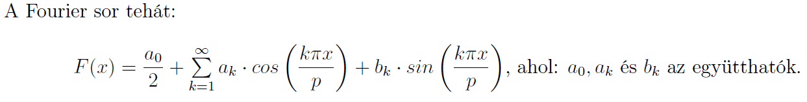

Mi is az a LaTeX?
A LaTeX tulajdonképpen egy általános célú dokumentumszerkesztő rendszer, amelynek alapja a TeX. A Tex alapvetően szövegszerkesztésre, nyomdai előkészítésre alkalmas programrendszer, a LaTeX pedig egy erre épülő programcsomag. Vannak előnyei, illetve hátrányai, talán a legnagyobb érv ami mellette szól, hogy sokkal effektívebben lehet esztétikus matematikai formulákat bevinni mint a konkurens társaival (pl. Word), éppen ezért leginkább a műszaki- és természettudományi alkalmazásokban terjedt el.
Ha kedvet kaptál a kezdéshez, jól jön pár segédanyag:
- Kovács Zoltán: LaTeX nem csak matematika szakosaknak
- Németh László, Wettl Ferenc: Egy nem túl rövid bevezető a LaTeX használatába
- ...és ha még ezek után is kérdésed lenne, itt már nagy valószínűséggel feltette valaki, ha mégsem, kérdezz bátran!
